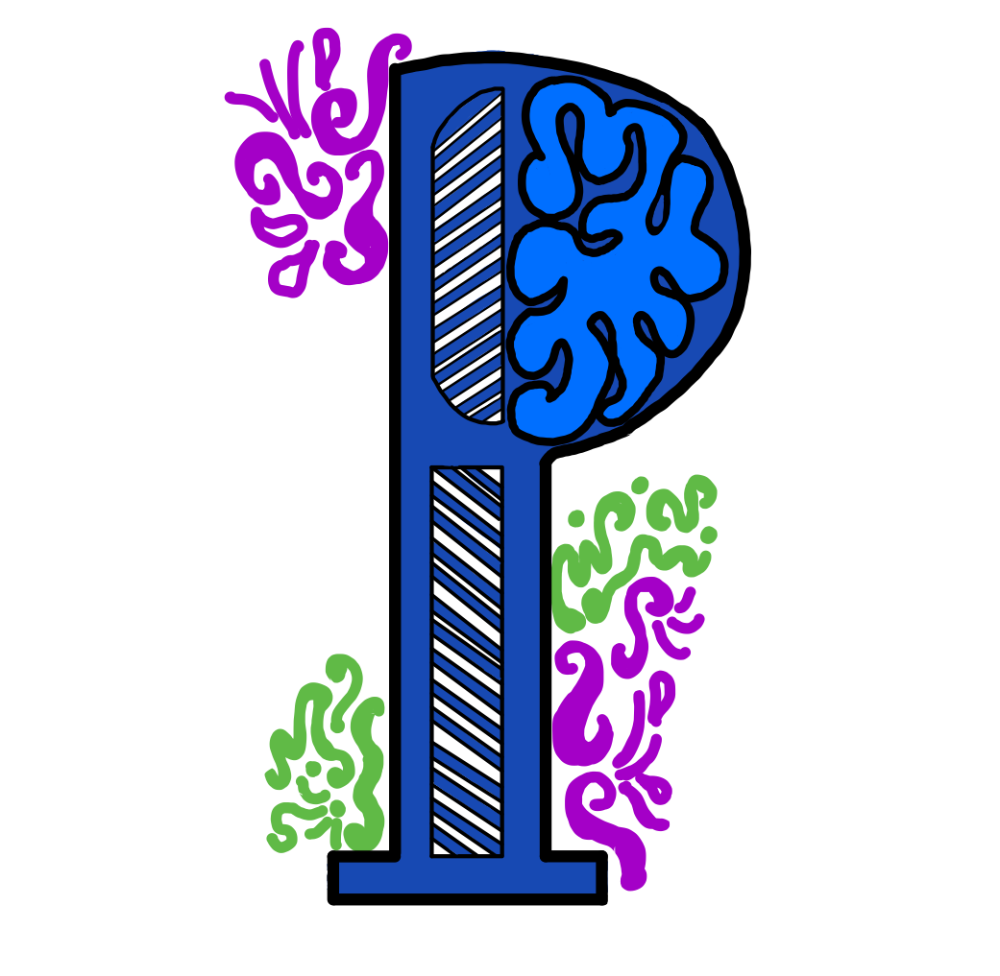

Bienvenue dans le guide d'utilisation de Polydessin. À gauche, vous verez un panneau latéral contenant la liste de tous les sujets regroupés par catégorie et sur cette surface, la présentation du contenu. Chaque catégorie, lorsque cliquée, révèle (ou masque) sa liste de sujets. Lorsqu’un sujet est sélectionné, le contenu qui lui est associé est présenté dans la partie droite de la page.
Deux boutons de navigations se trouvent à la fin du contenu pour chaque sujet. Le bouton précédent pour faire afficher le contenu du sujet précédent et le bouton suivant pour faire afficher le contenu du sujet suivant.
Le bouton 'X' en haut a droite permet de fermer le guide et retourner à la page précédente.
{{element.name}}
{{element.description}}
- {{element.points}}